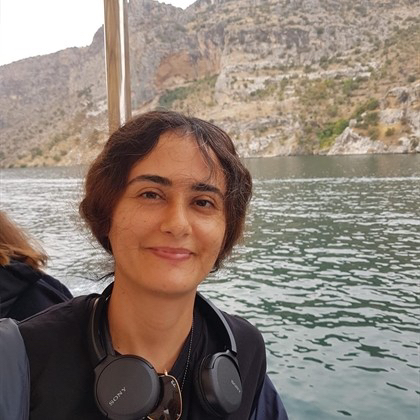
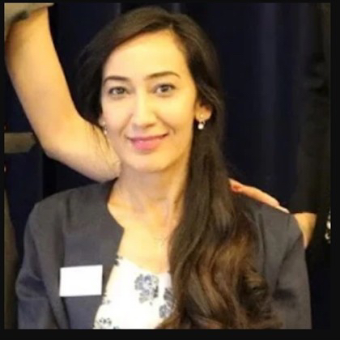
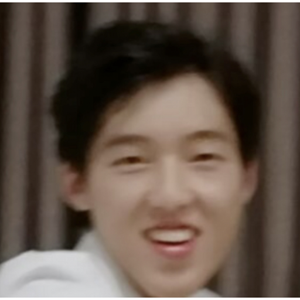

Topic & Motivation
With the rapid advancement in wireless and network technologies, mobile devices have evolved from mobile phones for calls and media playback to wearable devices such as smart glasses, XR headsets, and mobile robots capable of multimodal interaction in real‑time. As multimodal foundation models become more efficient to deploy across devices and edge/cloud, media consumption is changing into intelligent, embodied and context‑aware interaction. Instead of users passively viewing media, they can interact with embodied AI agents—avatars or assistive robots—that perceive, occupy and act in a shared space.
For such agents to operate naturally, they must reason about the world from multimodal data, maintain a grounded and continuously updated world understanding, run computationally efficient models suitable for resource‑constrained platforms, and ensure ethical and privacy‑aware data handling.
Key Questions
- How can an embodied AI system understand multimodal sensory inputs (e.g., visual, audio, language, tactile) from diverse data sources?
- How to build grounded, persistent and adaptive world understanding by integrating spatial computing algorithms and multimodal foundation models?
- How to deploy efficient algorithms across diverse platforms such as mobile devices, wearables, XR headsets, and edge networks?
- How to ensure responsible handling of sensitive, privacy‑rich data from egocentric views?
Keywords: mobile devices, embodied agents, multimodal, world models
Invited Speakers
Stephen Brewster
University of Glasgow
Stephen Brewster is a Professor of Human-Computer Interaction in the School of Computing Science at the University of Glasgow, where he leads the Multimodal Interaction Group within the GIST research section. His research focuses on multimodal HCI, combining audio, haptics, and gesture to create rich, natural human-computer interactions, with a strong emphasis on applying perceptual research to practical settings. He is a Fellow of the Royal Society of Edinburgh, a member of the ACM SIGCHI Academy, and an ACM Distinguished Speaker.
Andrea Cavallaro
EPFL & Queen Mary University of London
Andrea Cavallaro is a Full Professor at EPFL and Queen Mary University of London, where he founded the Centre for Intelligent Sensing, and a Turing Fellow at The Alan Turing Institute. He received his Ph.D. in Electrical Engineering from EPFL in 2002 and is a Fellow of IAPR for contributions to image processing and multi-sensor scene understanding. He serves as Editor-in-Chief of Signal Processing: Image Communication and Senior Area Editor for IEEE Transactions on Image Processing. His research spans privacy-aware visual analysis, person re-identification, and sensor data anonymization, and he has edited books on multi-camera networks and multimedia surveillance.
Angela Dai
Technical University of Munich
Angela Dai is an Associate Professor at the Technical University of Munich, where she leads the 3D AI Lab. Her research focuses on creating semantically grounded, interactable 3D worlds that enable machines to understand, model, and generate real-world 3D environments, allowing AI systems to perceive, reason about, and act within physical spaces. Angela received her PhD in computer science from Stanford University, and her BSE from Princeton University. Her contributions have been recognized through an ECVA Young Researcher Award, ERC Starting Grant, Eurographics Young Researcher Award, and an ACM SIGGRAPH Outstanding Doctoral Dissertation Honorable Mention. She recently served as Program Chair for Eurographics 2025 and CVPR 2026.
Tentative Schedule
Half‑day workshop (4 hours) – subject to minor adjustments
| Time | Event |
|---|---|
| 13:15–13:30 | Opening remarks |
| 13:30–14:00 | Invited Talk 1 |
| 14:00–14:30 | Invited Talk 2 |
| 14:30–15:00 | Invited Talk 3 |
| 15:00–16:00 | ☕ Coffee break and poster session for accepted and invited contributions at MalmöMässan Exhibit Hall |
| 16:00–16:30 | UNOBench Challenge presentation |
| 16:30–17:15 | Panel discussion |
| 17:15–17:30 | Closing remarks |
We will also host an Embodied Reasoning Challenge based on the UNOBench benchmark for robotic grasping in cluttered scenes.
Workshop Organizers

Püren Güler
Ericsson Research

Hirokatsu Kataoka
AIST / Oxford VGG

Yoshihiro Fukuhara
AIST / CADDi
Fabio Poiesi
FBK, Trento

Hiba Alqaysi
Ericsson Research
Anastasia Grebenyuk
Ericsson Research

Haoyu Xiong
MIT
Marcus Valtonen Örnhag
Ericsson Research
Magnus Oskarsson
Lund University
Héctor Caltenco
Ericsson Research
Call for Papers
The submission portal is now open on OpenReview, follow this link.
We welcome submissions on all topics related to the embodied world models on device. The exact submission format and paper page limits will follow the ECCV 2026 official template and main conference guidelines, see here. Each submission will be reviewed under a double-blind policy.
We offer two submission tracks: Archival and Non-Archival. Archival track follows the standard ECCV paper format with a 14-page limit, are submitted via OpenReview, and will be published in the workshop proceedings. Non-Archival submissions are extended abstracts with a 4-page limit; they will not appear in the proceedings but will be featured on the workshop website. We welcome submissions of previously published work on topics relevant to the workshop as extended abstracts.
Topics include (but are not limited to):
- Embodied world models
- Multi-modal reasoning
- Spatial understanding for XR, robotics, autonomous driving, etc.
- Deployment of AI models and spatial compute at the edge
- Privacy preserving perception on devices
Important Dates
The following schedule applies.
| Milestone | Date |
|---|---|
| Workshop date | September 8, 2026 (afternoon session) |
| Submission opens | June 2 |
| Paper submission deadline | |
| Paper acceptance notification | August 7 |
| Camera-ready version | August 14 |
Additional information
Poster boards are 140 x 100 and poster printing information will be posted on the main conference website shortly.
Room assignments will be posted on the app and on our website.
Workshop supporters
In addition to the organizing committee, we would like to recognize the individuals below for supporting the workshop as external reviewers. Their expertise and dedication greatly assisted the peer-review process.
- Chuang Ke, OPPO US Research Institute
- Srinivas Harish, Prediction
Diversity & Inclusion
Our workshop emphasizes diversity across the organizing team and invited speakers. The team includes members of diverse gender representation and international backgrounds from Europe, the Middle East, and Asia. Organizers span multiple career stages and affiliations (industrial research, universities, national labs). Speaker institutions are globally recognized, and their expertise covers interdisciplinary areas—world‑model scaling, multimodal interaction, responsible AI—directly aligned with our workshop's key questions.
Sponsor